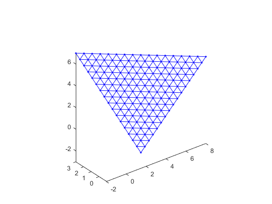
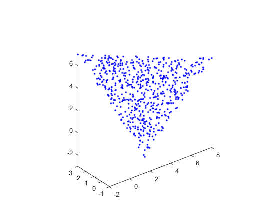

Sample_triangle
Function to generate a triangular sampling grid of a given triangle following its edge directions. An element of the resulting mesh is an homothetic smaller version of (V1, V2, V3) triangle. Works in any dimension Ndim >= 2.
Author : nicolas.douillet9 (at) gmail.com, 2017-2024.
Contents
Syntax
[V T] = sample_triangle(V1, V2, V3);
[V T] = sample_triangle(V1, V2, V3, nbstep);
V = sample_triangle(V1, V2, V3, nbstep, option_random);
V = sample_triangle(V1, V2, V3, nbstep, option_random, nb_points);
Description
[V T] = sample_triangle(V1, V2, V3) generates and returns a set of points which samples the (V1, V2, V3) triangle, such that there is 20 samples steps in each vector direction, (V1V2) and (V1V3).
[V T] = sample_triangle(V1, V2, V3, nbstep) uses nbstep steps in each direction, (V1V2) and (V1V3), therefore size(V,1) is always a triangular number.
V = sample_triangle(V1, V2, V3, nbstep, option_random) randomly generates the coordinates of 200 sampling points when option_random = true / 1. The resulting grid is not regular anymore. Valuable precision : nbstep is not taken into account in this case. V1, V2, and V3 are part of the set.
V = sample_triangle(V1, V2, V3, nbstep, option_random, nb_points) allows to tune the wished number of points, nb_points. V1, V2, and V3 are part of the set.
See also
| meshgrid | trimesh | linspace | mesh |
Input arguments
[V1x]
- V1 = [V1y] : numeric column vector, size(V1) = [Ndim, 1]. The 1st vertex coordinates.
[V1z] [V1x]
- V2 = [V2y] : numeric column vector, size(V2) = [Ndim, 1]. The 2nd vertex coordinates.
[V2z] [V3x]
- V3 = [V3y] : numeric column vector, size(V3) = [Ndim, 1]. The 3rd vertex coordinates.
[V3z]- nbstep : numeric scalar, integer, nbstep > 1. The number of sampling steps.
- option_random : either logical *false/true or numeric, *0/1. If false / 0, output T is irrelevant.
- nb_points : numeric scalar, integer. The number of points wished in case option_random = true / 1.
Output arguments
| | |
- V = [X Y Z] in dimension 3, numeric matrix, the data matrix of the sampling points coordinates. size(V) = [nb_points,Ndim].
| | | | | |
- T = [i0 i1 i2] in dimension 3. numeric matrix, triangles index matrix. size(T) = [nbstep^2,3]. Is not relevant in case option_random = true / 1.
| | |3D example
3D regular sampling + mesh
V1 = [-2 3 7]'; V2 = [8 -1 5]'; V3 = [3 1 -3]'; nstep = 16; [V, T] = sample_triangle(V1, V2, V3, nstep); TRI = triangulation(T, V(:,1), V(:,2), V(:,3)); figure; plot3(V(:,1), V(:,2), V(:,3), 'b.', 'Linewidth', 2), hold on; trimesh(TRI); colormap([0 0 1]); axis equal, axis tight;
4D example
Random sampling and its 3D projection
V1 = [-2 3 7 1]'; V2 = [8 -1 5 2]'; V3 = [3 1 -3 -2]'; nstep = 16; option_random = true; V = sample_triangle(V1, V2, V3, nstep, option_random, 600); figure; plot3(V(:,1), V(:,2), V(:,3), 'b.', 'Linewidth', 2), hold on; axis equal, axis tight;